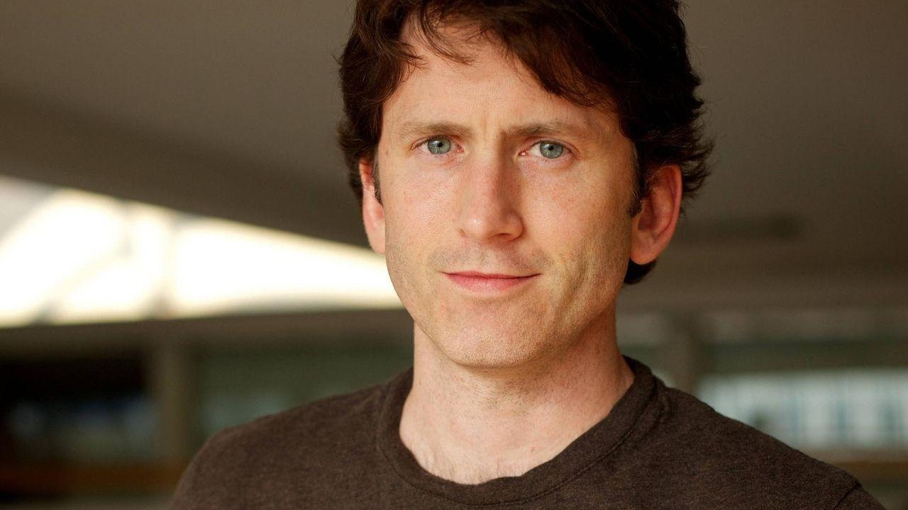
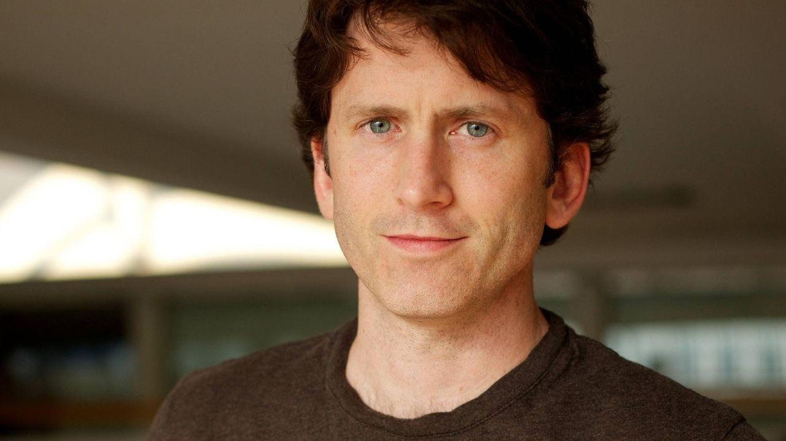

Хидэо Кодзима
Хидэо Кодзима — японский геймдизайнер, родился 24 августа 1963 года в Токио. На протяжении многих лет работал в компании Konami Digital Entertainment, в том числе как руководитель внутренней студии Kojima Productions, и некоторое время был вице-президентом Konami. После разрыва с Konami в 2015 году Кодзима воссоздал и возглавил Kojima Productions уже как независимую студию. Наиболее известен как создатель серии игр Metal Gear. Разработанные под его руководством игры этой серии выходили на протяжении более чем четверти века, оказав немалое влияние на жанр стелс-игр и индустрию компьютерных игр в целом.